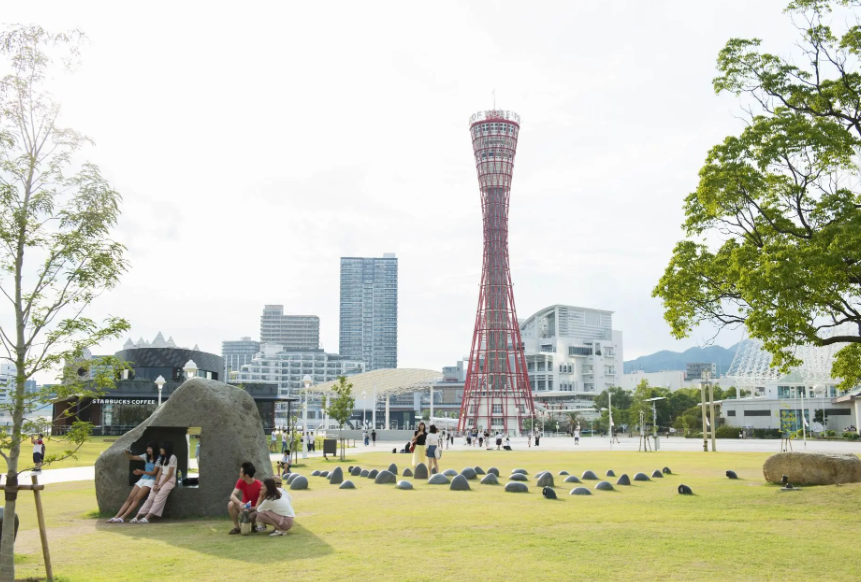
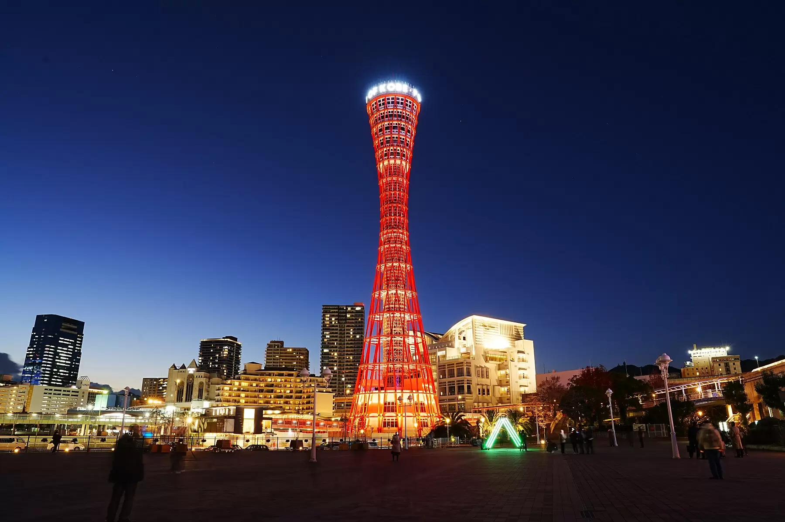
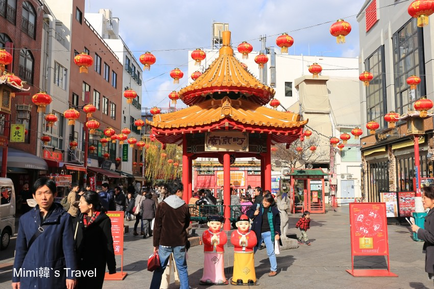
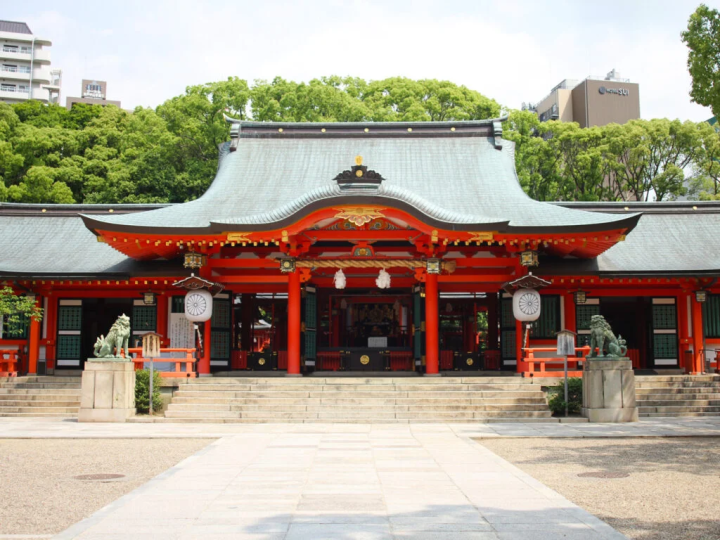
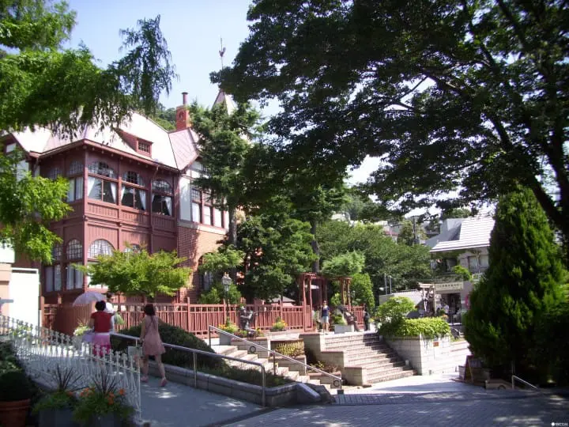
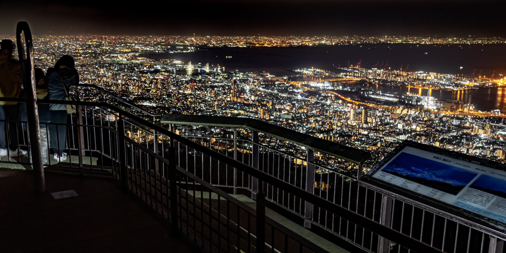

大阪車站 ➡️ JR 神戶站
搭乘 JR 神戶線新快速（姬路/網干方向）。車程約 25 分鐘。
【去程 JR 新快速規律】
08點時段：08:01（原定班次）、08:09、08:18、08:30、08:40、08:50（班次極密）
09點時段：09:00、09:15、09:30、09:45（每15分鐘固定一班）
前後2小時其餘班次：06:23、06:50、07:12、07:31、07:44、07:53
步行至美利堅公園
從 JR 神戶站中央口出站，沿著地下街（Duo Kobe）往港灣方向步行約 15~20 分鐘。
懶得走路可從車站改搭計程車（車資約 1,000 日圓，5 分鐘達）。

08:45 - 09:50美利堅公園（停留 1hr）
步行。
就在港區，與 BE KOBE 標誌拍照。

09:50 - 11:20神戶港塔（停留 1.5hr）
步行。
就在美利堅公園旁，步行 2 分鐘。
港塔 ➡️ 元町商店街
步行。
往北直走約 10 分鐘即可抵達元町商店街與南京町（唐人街）。

11:30 - 13:30元町商店街／南京町（午餐 2hr）
步行。
享用神戶牛或特色小吃。
元町 ➡️ JR 三之宮站
搭乘 JR 神戶線（普通或快速列車，僅 1 站，車程 2 分鐘）。
亦可選擇沿著高架橋下的商店街直接步行前往三宮（約 12-15 分鐘）。

13:50 - 14:30生田神社（停留 40 分）
步行。
從 JR 三之宮站西口出站，往北步行約 5 分鐘。

14:30 - 17:00北野異人館街（停留 2.5hr）
步行（一路上坡）。
從生田神社往北徒步爬坡約 15 分鐘。若體力不支，可在三宮站前改搭 City Loop 觀光巴士至「北野異人館」站。
北野異人館 ➡️ 摩耶纜車站
最推薦：搭計程車（約 10~15 分鐘，車資約 1,500~2,000 日圓，多人分攤最划算）。
替代公車：步行下山至「地下鐵三宮站前」公車站，搭乘神戶市營巴士 18 號至「摩耶ケーブル下」站。
摩耶山登山換乘
搭乘摩耶登山纜車至虹之站，再轉乘空中吊車至星之站（山頂）。
纜車與吊車班次密集（約 20 分鐘一班），兩段銜接時間約需 20-25 分鐘。

18:00 - 19:15摩耶山 掬星台（夜景 1.5hr）
欣賞百萬夜景。
週末晚上山頂人潮多，強烈建議至少提早 35~40 分鐘在山頂排隊等纜車，以免錯過山下的公車。
摩耶山頂 ➡️ JR 三之宮站
原路搭兩段纜車下山至「摩耶ケーブル下」公車站，直接搭乘 18 系統公車直達回三宮（車程約 25 分鐘，210 日圓）。
【18系統公車 19:00 後下山班次】
19點時段：19:18、19:47
20點時段：20:18、20:32（始發）
21點時段：21:33（當天末班車！⚠️）
JR 三之宮站 ➡️ 大阪車站
抵達三宮後，搭乘 JR 神戶線新快速回大阪車站。車程約 21 分鐘。
【回程 JR 新快速規律】
20點時段：20:09（最推薦班次）、20:23、20:38、20:53
21點時段：21:08、21:23、21:38、21:53（每15分鐘固定一班）
前後2小時其餘班次：18:09、18:22、18:37、18:43、18:52、18:59、19:08、19:17、19:23、19:38、19:44、19:53、19:59